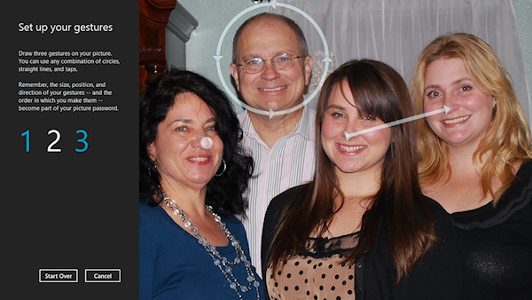

JCrypTool implements a graphical password method similar to the Android Unlock Pattern (AUP) leveraged by Android for unlocking devices. In the following section, this method is explained, and its security is compared with PINs. Afterwards, further graphical password methods are shortly presented.
Remark: This is currently the only plug-in that is not available on all three operating systems. While under Windows and macOS the mouse events in this animation are correctly intercepted by SWT, this does not happen under Linux, so that this plug-in is not available there for the time being.
The AUP authentication scheme is supported by the Android operating system since October 2008 with version 1. The scheme is used to prevent unauthorized access to the device and to data stored on it. In the following the AUP design and security is described.
The AUP uses nine quadratic arranged fields in a grid to describe a ‘password’. This resulting pattern is then used like a password for unlocking a device.
For choosing AUP patterns the following rules have to be considered:
The Google Nexus S with unmodified Android 2.3.4 is used as reference because many devices are operated by vendor modified Android versions: The unmodified Android forces the user to wait for 30 seconds after five failed unlock attempts. From this point on, the Google password can additionally be used for unlocking the device. However, the user is still able to use the pattern for 15 further pattern unlock attempts. Every five failed attempts 30 seconds have to be waited. After a total of 20 failed attempts, the device can be only unlocked with the Google password. The security of this password is not evaluated because it is a standard text based password.
The AUP has a total of 389,112 different valid patterns. This value was determined using a brute-force approach. (Remark: If you know a formula feel free to contact us.)
For comparison: There are 985,824 different PINs of length four to nine, using the digits 1 to 9, and containing every digit only once. These PINs are called limited PINs. The rules for limited PINs are similar to that of the AUP. The calculation is done as sum of the k-permutations of n[1] over the PIN lengths four to nine:
$$\sum_{k = 4}^{9} \frac{9!}{(9 - k)!}$$The table below lists the quantity of AUP permutations in direct comparison to the above explained limited PIN. The column ‘Multiplier’ lists the growing factor of the permutations when their length is increased by one. The column ‘AUP/PIN’ lists the ratio of the AUP quantity to the PIN quantity.
| PIN | AUP | AUP/PIN | |||
| Length | Quantity | Multiplier | Quantity | Multiplier | |
| 4 | 3,024 | 5 | 1,624 | 4.40 | 0.537 |
| 5 | 15,120 | 4 | 7,152 | 3.64 | 0.473 |
| 6 | 60,480 | 3 | 26,016 | 2.80 | 0.430 |
| 7 | 181,440 | 2 | 72,912 | 1.93 | 0.402 |
| 8 | 362,880 | 1 | 140,704 | 1 | 0.388 |
| 9 | 362,880 | / | 140,704 | / | 0.388 |
| Sum | 985,824 | 389,112 | 0.395 | ||
As the table shows, the AUP grows slower. As a result, with increasing length the direct comparison gets even worse. In the total, the AUP achieves only about 40% of the limited PIN’s permutation quantity.
However, it should also be noticed that humans are verifiably able to memorise patterns and pictures much better.[2, p. 5] Accordingly, longer pattern can be memorised well, resulting in a lower significance of the direct comparison. On the other hand, a not restricted PIN has significant more permutations. These can be calculated as \(10^l\) for a normal PIN with 10 digits and length \(l\).
All in all, there are 2,856 times more limited PINs than AUP permutations (for limited PINs of length 4 to 9). Due to the fact, that the AUP has not so many pattern permutations, it is more vulnerable to brute-force attacks than PIN or password authentication methods. However, a brute-force attack which uses the conventional input has only a very little success rate because only 20 pattern can be tried. Thereafter the Google account password is required.
1. Shoulder Surfing
The observation of a victim during an authentication process in order to partly or fully learn a victim’s secret is called shoulder surfing. The observation itself can be carried out directly through the adversary or indirectly for example with cameras. Shoulder surfing AUP patterns is generally easier than PIN or passwords, because inputting patterns requires a large part of the display.
2. Smudge Attack
After the usage of touchscreen devices mostly oily smudges are left behind on their surfaces. These can be used as side channel for detecting recently or frequently touched areas. The resulting information can be used for example to gain information on the authentication pattern or password.
3. Attacking Stolen Authentication Data
In case, authentication data can be copied and thus separated of an authenticating system, it is possible to directly analyse it. As a result, it is possible to launch a brute-force attack which tests all alternatives for a match. Android saves the patterns as unsalted hash values, which is an additional weakness: Dictionary attacks for retrieving patterns from their hash value could be performed in a matter of seconds.[3]
 |
 |
|
| User input | Internal representation |
The DAS utilizes drawn ‘passwords’ for user authentication. These passwords are represented as sequence of traversed fields in a grid. The DAS has no limitations regarding the length of the sequence or the repetition of single fields. Additionally, it is possible that a pattern can be composed of many disjoint parts. The AUP can therefore be considered as special case of the DAS because its length is limited, fields can be used only once, and the pattern is one coherent line. The DAS developers recommend a grid size of \(5 \times 5\).[2]
According to the developers’ security analysis, the DAS features a higher security level than passwords.[2] Due to the much better memory of humans for figures and graphics long patterns can be chosen. But notice that mirror symmetrical figures can be memorised better than asymmetrical.[4] This fact can be exploited to reduce the possible pattern set for an attack significantly which in the end results in a lower security.

Windows 8 adopts the idea of graphical passwords to offer a login technique based on this idea. In order to use this authentication scheme, the user has to choose a picture and highlight different areas with gestures thereafter. In comparison to the DAS no freeform gestures are supported; they are limited to circles, lines and taps. Another difference is that only certain ‘characteristics’ are saved for the authentication and not a sequence of fields. For lines the start and end point, as well as their direction is saved. The grid moreover has a much higher resolution. “The longest dimension of the image is divided into 100 segments. The shorter dimension is then divided on that scale to create the grid upon which you draw gestures.”[5] According to Sinofsky this authentication procedure has a much better security than traditional passwords.[5]
Sources
| [1] | Wikipedia contributors. Permutation, 22 October 2012. http://en.wikipedia.org/wiki/Permutations#In_combinatorics, retrieved 26 October 2012. |
| [2] | I. Jermyn, A. Mayer, F. Monrose, M. K. Reiter, and A. D. Rubin. The Design and Analysis of Graphical Passwords. In Proceedings of the 8th USENIX Security Symposium, August 1999. http://static.usenix.org/events/sec99/full_papers/jermyn/jermyn_html/. |
| [3] | Michael Spreitzenbarth. Cracking the Pattern Lock on Android, 28 February 2012. http://forensics.spreitzenbarth.de/2012/02/28/cracking-the-pattern-lock-on-android/, retrieved 11 October 2012. |
| [4] | Xiaoyuan Suo, Ying Zhu, and G. Scott. Owen. Graphical Passwords: A Survey. In Proceedings of the 21st Annual Computer Security Applications Conference, December 2005. |